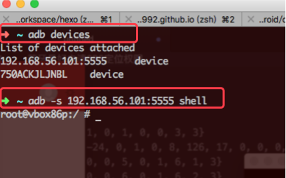

阅读《Android 编程实战》一书的随记笔记
Android SDK 进一步了解
SDK基本我们都是确保为最新的. 更新SDK最简单的方法就是命令行:
$ android update sdk --no-ui
命令脚本在SDK安装目录的tools文件夹下. 对于之后对其例如tools, platform-tools, gradle的全局环境配置就不单独说明. 说一下mac下的配置/Users/yourname/文件夹下的bash_profile文件. 放入一下我的全局配置文件,可以作为格式参考,别忘了替换成你自己的电脑用户名.
export PATH="/usr/local/mysql/bin:$PATH" |
当配置全局环境完成之后, 可以手动刷新全局环境, 让更改的操作立即生效.
$ source ~/.bash_profile
adb工具
adb位于platform-tools文件夹. 可以使用$ adb help all查看可执行的操作.
一些常用的命令:
adb devices列出所有连接的Android设备和虚拟机adb push <local> <remote>将电脑上的文件复制到设备adb pull <remote> <local>将设备上的文件复制到电脑
如果存在多台设备,进行操作的时候需要选择某一个设备

通过-s <指定serial number>来确定连接哪一个设备.
adb logcat查看日志
$ adb logcat MainActivity:* *:s
这条命令会开启日志输出, 并且只打印MainActivity标签的日志. *代表任何可能的值. 其格式<tag>:<priority>, 而后面的*:s添加的特殊过滤用来过滤所有信息. 如果还想显示Android系统相关的日志以及由平台引起的应用程序异常可以加上AndroidRuntime:*参数.
WiFi连接adb
USB连接时最常用, 当不代表就是唯一途径. 也可以用WiFi通过TCP/IP连接来连接设备.
如果想要无线连接, 首先需要使用USB先连接电脑, 进行配置; 并且保证电脑和手机是处在同一WiFi环境下. 这是先决条件. (WiFi ip地址可以在手机设备网络连接查看). 然后命令即可
$ adb tcpip 5555 |
说明一下,tcpip 5555会在TCP/IP模式下重启adb守护进程, 然后监听5555端口(adb默认端口). connect命令会使用电脑上的adb服务连接设备的IP地址. 然后拔掉usb查看设备应该会出现一个ip地址:端口序列名的设备. 你可以使用adb shell简单测试一下.
adb守护进程会一直保持TCP/IP模式, 直到设备重新启动, 或者运行了adb usb, 该命令会重启USB守护进程.
当然有利就有弊, 首先不是所有设备都支持WiFi连接, 并且相比较usb调试. 速度方面明显比较慢.
在Android设备上执行命令
当在Android设备上运行shell时, am和pm命令会比较有用, 他们对应应用程序Application和包管理器Package Manager. 例如由一个外部Intent启动Service可以使用am命令手动发送Intent.
$ adb shell am startservice -a <intent action>
同时也可以指定某一个具体的组件名. 也可以启动Activity或者发送Intent广播. 例如当开发过程中需要测试一个Service, 但是启动它的Activity还没有被创建, 这时候就可以使用命令.
包管理器是Android上的一个核心组件. 它用来管理设备上已安装的应用程序. 可以像使用Application Manager一样控制pm命令来使用. 比如允许开发者查看, 安装, 卸载已安装程序等. 还能检查这些应用的特性和应用权限. 例如:
查看已安装的程序
$ adb shell pm list packages
如果需要查看更多使用说明可以看官网说明adb使用说明 注意科学上网…
Gradle简单说明
随着AS的普及, 对于Gradle也将彻底替代Ant脚本. 和Ivy,Maven一样的模块化构建系统. 他结合了Ant的灵活以及Maven中的依赖管理. Gradle使用了Groovy领域的专用语言, 可以更清楚地描述配置项, 不用再写复杂的XML构建脚本.
关于根目录的build.gradle文件. 中主要有三个区块:
apply plugin: xxx // gradle应用哪种插件 |
虽然可以直接在AS中构建项目, 同样也可以通过命令与构建系统交互. Gradle定义了一系列任务. 在项目根目录下输入如下命令即可列出可用的任务:
$ ./gradlew tasks
如果需要从头开始构建一个应用程序, 只需要运行下面的命令:
$ ./gradlew clean build
ProGuard优化和混淆代码好处
- 对代码混淆可以让反编译更加困难.
- 删除无用的代码能压缩生成更小的二进制dex文件
- 并且由于对方法名,成员变量等混淆可以提高相应的运行速度
由于ProGuard工具对Android代码进行了混淆, Gradle构建工具也支持该工具, 可在build.gradle文件的android块->buildTypes块->添加对应代码.
buildTypes { |
熟悉IDE
断点
当程序达到断点出, 可以检查此时的应用状态. 所有的作用域中的变量都会直接显示IDE的调试视图中. 并且可以改变当前作用域的变量值, 可不需要重启应用.
根据单步的不同跳入方法, 可以顺序执行, 自己定义的方法跳入, 系统提供的方法跳入, 鼠标垫跳入.等可以追踪到不容易发现的问题.
lint静态代码分析
编写代码总会伴随着错误发生, 即使经验丰富的人也不过是把错误发生的概率降低. 但是不能杜绝. 针对这种问题就出现了编写单元测试来检测方法代码. 但是编写的单元测试也不可能覆盖所有的情况. 所以有时候可能需要其他的方式来检测. 例如静态代码分析
功能:
lint工具会检查性项目中的源文件, 包括XML和Java. 它还会查找缺失元素,结构不良的代码,问呗使用的变量等. 在AS中高亮显示的代码表示代码要修正. 可以将鼠标移动到此处会显示更多细节.
问题:
虽然lint可以很强大的检测一些错误, 但有时候可能我们并不想让其显示警告, 例如如果缺少了推荐代码, 由于某些原因使用了过时代码, 但是毫无办法并且确认程序是不会发生错误的, 这个时候是就可以压制lint的警告.
java文件: 可以使用@SuppressLint注解, 把需要一直的警告当做参数xml文件: 需要引入lint命名空间(xmlns:tools="http://scheme.android.com/tools"), 然后在需要抑制警告的时候添加tools:ignore="WarningName"
重构代码
IDE内置了多种重构任务. 重构涉及命名, 移动变量,方法,类, 修改方法签名, 封装字段等等. 在AS中将光标放在需要修改的代码处, 然后从Refactor菜单中进行后续具体的操作
- 提取常量: (
Extract Constant). 可以快速的将一个变量替换成常量. - 修改方法签名: 方法签名定义了方法的修饰符, 返回类型, 名称, 参数.
- 从代码提取方法: 保持方法的内容不要过多, 并且方法的目的明确.这是一种好的习惯. 可以选中一段代码块然后执行
Extract Method(抽取方法)来提取出一段代码重构为一个方法. 此后如果有需要还可以修改方法签名(Change Method Signature)来进行处理. - …
更多的选项可以自己去手动实践. 当熟练之后, 对于代码编写速度是一个不错的提升.
手机上的开发者选项
这里稍微介绍一下关于开发者选项里面的一些功能.
- 不锁定屏幕(Stay Awake): 该选项可以在设备充电的时防止屏幕锁屏, 前提是用USB线和电脑连接. 这样就不需要由于等待时间过长, 手机自动锁屏.
- 启动USB调试: 这是使用
adb连接设备和开发环境的先决条件. - Allow Mock Location: 如果需要对位置相关开发, 可以使用此模式模拟(不同厂商可能不提供)
- 显示触摸操作(Shoe Touches)和指针位置(Pointer Location): 它们对编写需要手势或者多点触控界面等高级触摸开发调试比较有用处
- Drawing(绘图): 可以让开发者获取视图反馈的设置项, 比如用户界面布局以及重绘的速度和频率. 可以为动画和过渡效果设置缩放参数. 也可以在调试的时候完全禁用他们.
Android4.2中的一个新功能是允许模拟辅助显示屏. - Monitoring(监控): 有些设置项对确保设备流畅运行非常有用. 大部分开发者通常使用的测试机为新款手机. 但是有些用户的的一些旧设备可能会出现一些高端机上不会发生的问题. 使用以下这些选项可以更早的定位这些问题.
Strict Mode Enabled(严格检查模式): 在主线程执行一个很耗时的操作时设配屏幕会闪烁.
Show CPU Usage(显示CPU使用情况): 性能比较, 可以跟踪程序的CPU使用率
- Apps部分: 也可以作为模拟使用较差的CPU和低内存的设备行为.
不保留活动(Don't keep Activities): 可确保每次启动Activity都重新创建. 默认是只有内存不足的时候才会删除, 并且做到尽量保持activity处于活动状态.
后台进行限制(Background Process Limit): 可以更早的结束后台操作,和上面选项模拟的行为类似.
显示所有ANR(Show All ANRs): 当应用程序在后台崩溃时他会变得更加明显. 通常, 只有当前在前台运行的应用程序才会显示ANR